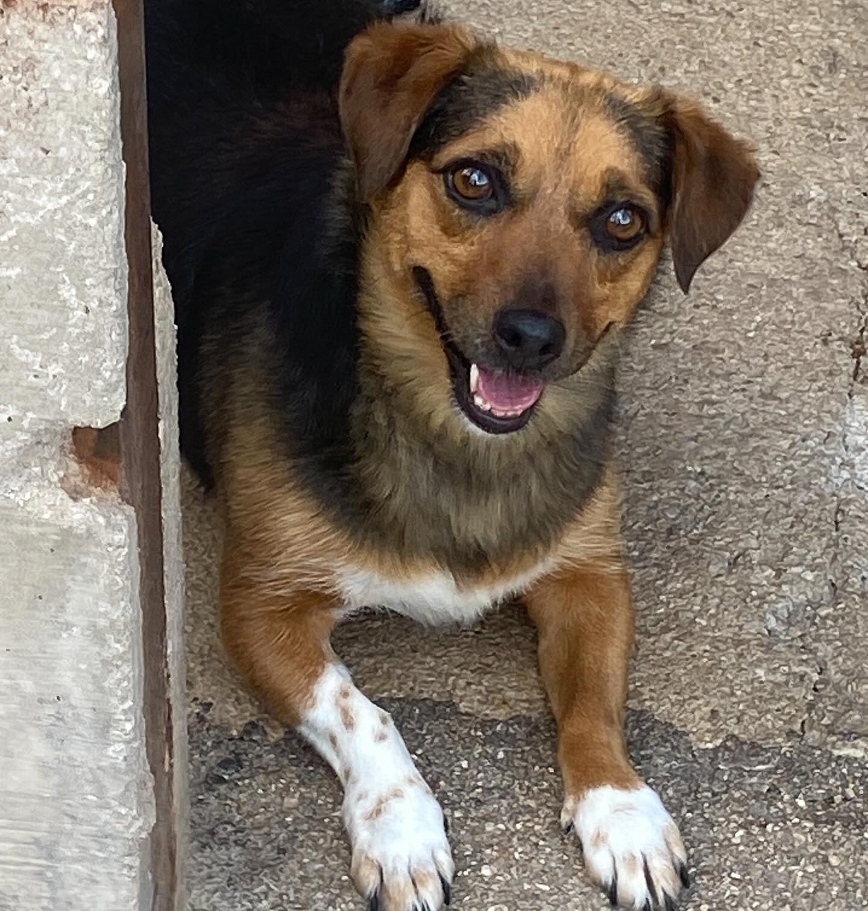
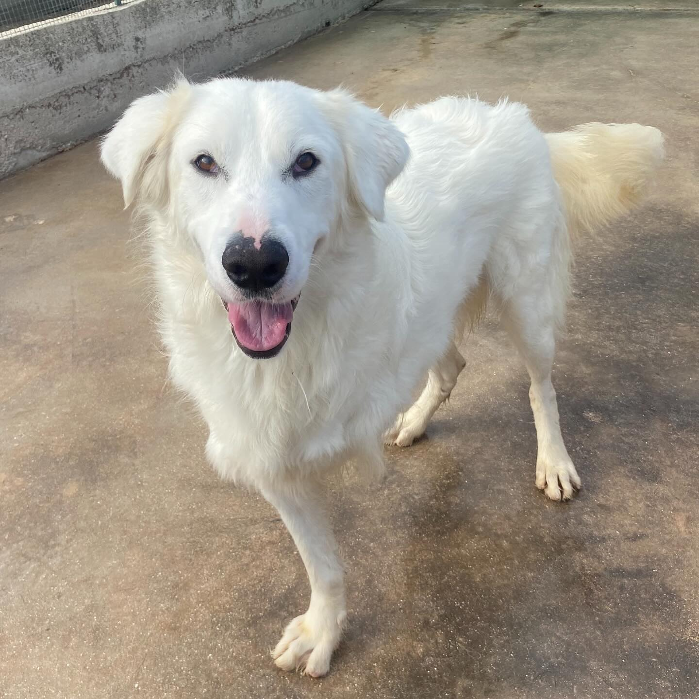
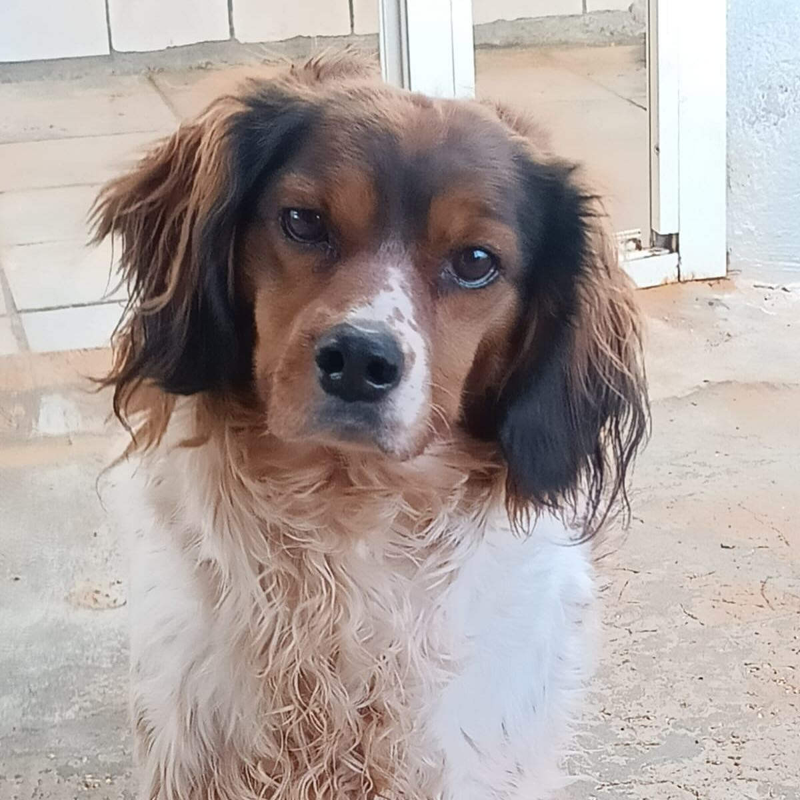
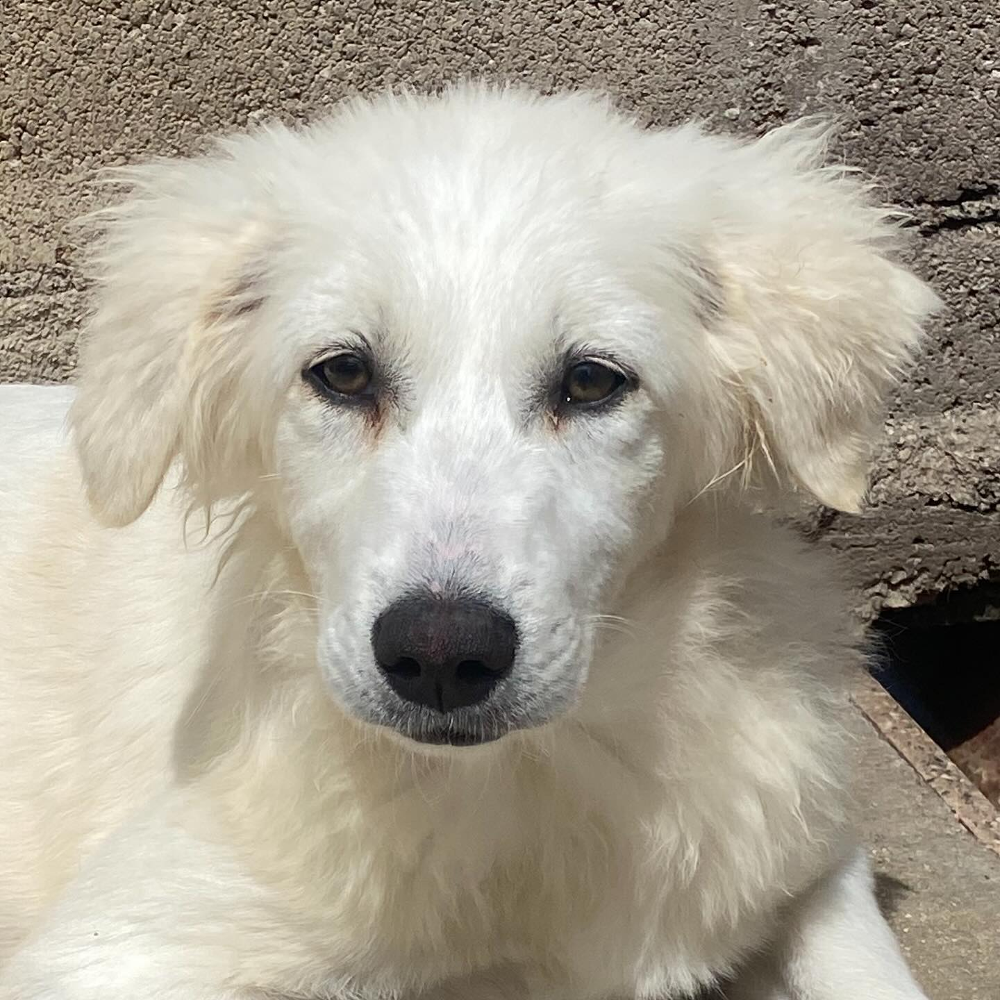
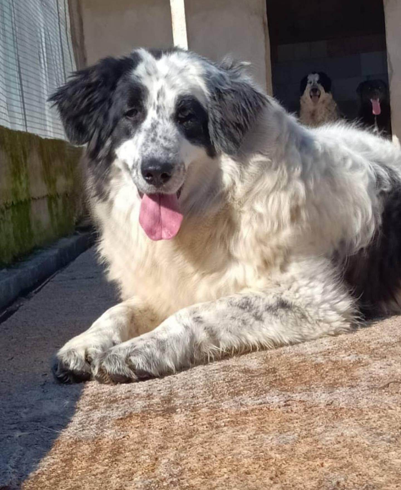

Neve
Taglia mediaUn po’ di timidezza. Un mondo di dolcezza.
Conosci NeveDA LATINA, CON AMORE. DAL 1981.
A te, forse, manca proprio lui.
Ci sono incontri che cambiano due vite.
Una famiglia per loro.
Un amico per sempre, per te.
VOLTI DA CONOSCERE
Dietro ogni muso, una storia.
Prenditi un momento per conoscerla.
Storie dagli annunci di novembre 2025. Chiedi ai volontari chi cerca ancora casa e le informazioni aggiornate.
Un po’ di timidezza. Un mondo di dolcezza.
Conosci Neve
Piccola, con un cuore grandeLe cose belle hanno bisogno dei loro tempi.
Conosci Memole
Tre zampe, tutta la gioiaSocievole, giocherellone. Pronto a farsi amare.
Conosci Ghali
Molto più di una diagnosiUna pallina, una carezza e la sua allegria.
Conosci Betty
La fiducia, un passo alla voltaUna nuvola bianca che sta imparando a fidarsi.
Conosci Shiri
La dolcezza, in grandeAll’inizio riservata. Poi, tutta da conoscere.
Conosci CarolinaAMICI DEL CANE DI LATINA ODV
DAL 1981, DALLA LORO PARTE.Accogliere. Curare. Restituire fiducia.
Dal 1981 l’associazione si prende cura dei cani senza famiglia e lavora contro il randagismo. Ogni giorno, il volontariato trasforma l’attesa in una possibilità.
Conosci l’associazioneUN INCONTRO. UNA SCELTA CONSAPEVOLE.
L’adozione comincia conoscendosi.
I volontari ti aiutano a capire
quale incontro può essere quello giusto.
Scrivi su WhatsApp una breve presentazione e indica il cane che vorresti conoscere. I volontari chiedono messaggi, non chiamate.
Chiedi informazioni aggiornate e concorda con i volontari i prossimi passi. Carattere, abitudini e bisogni contano quanto il primo sguardo.
Il percorso descritto negli annunci prevede controlli prima e dopo l’affido. Modalità e requisiti vengono definiti con l’associazione.
Si apre WhatsApp. Nessun messaggio viene inviato automaticamente.
C’È SEMPRE UN MODO
Anche un gesto piccolo può
entrare in una storia grande.
Scopri i canali per le donazioni pubblicati dall’associazione.
Trovi le indicazioni e il codice fiscale nella pagina dedicata.
Materiali, disponibilità, energie: senti i volontari per capire come essere utile.
PRIMA DI INCONTRARCI
Le schede riprendono annunci pubblicati nel novembre 2025. La disponibilità, l’età attuale e le condizioni possono essere cambiate. Per questo ogni storia ti porta al contatto del volontario e all’annuncio originale: chiedi sempre una conferma aggiornata.
In diversi annunci l’associazione indica la possibilità di adozioni anche fuori zona. Per alcuni cani ci sono esigenze specifiche: per Shiri, ad esempio, il post dà precedenza alle famiglie in zona o disposte a venirla a prendere. Concorda tutto con i volontari.
Scrivi prima ai volontari per verificare la disponibilità del cane e organizzare l’incontro. Il canile si trova in Via Congiunte Destre a Latina. Non prenotare viaggi o visite senza aver ricevuto conferma.
Apri la scheda di un cane e usa “Condividi l’appello”: condividerai il suo annuncio originale. Puoi anche seguire i profili Facebook e Instagram dell’associazione e diffondere i loro aggiornamenti.
IL PROSSIMO BEL RICORDO